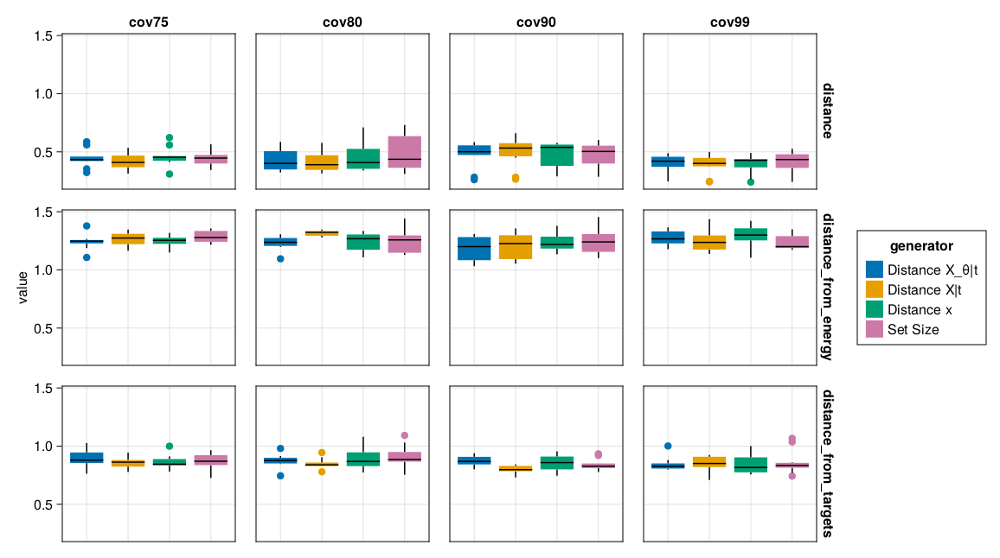
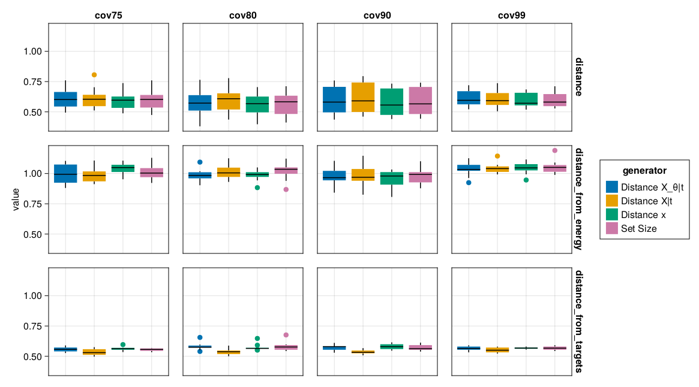
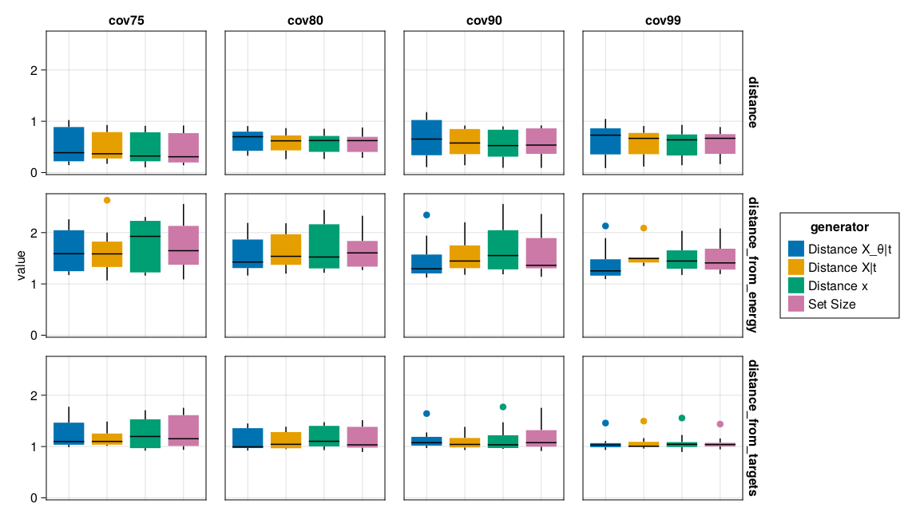
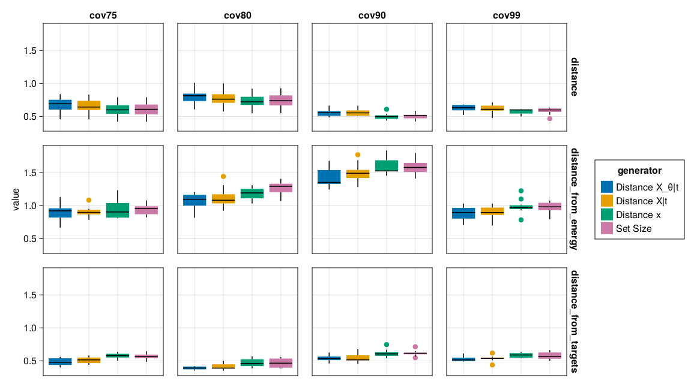
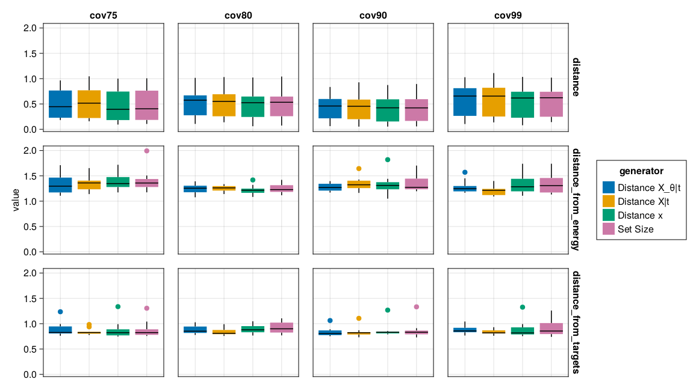

include("notebooks/setup.jl")
eval(setup_notebooks)2 ConformalGenerator
In this section, we will look at a simple example involving synthetic data, a black-box model and a generic Conformal Counterfactual Generator.
2.1 Black-box Model
We consider a simple binary classification problem. Let \((X_i, Y_i), \ i=1,...,n\) denote our feature-label pairs and let \(\mu: \mathcal{X} \mapsto \mathcal{Y}\) denote the mapping from features to labels. For illustration purposes, we will use linearly separable data.
counterfactual_data = load_linearly_separable()While we could use a linear classifier in this case, let’s pretend we need a black-box model for this task and rely on a small Multi-Layer Perceptron (MLP):
builder = MLJFlux.@builder Flux.Chain(
Dense(n_in, 32, relu),
Dense(32, n_out)
)
clf = NeuralNetworkClassifier(builder=builder, epochs=100)We can fit this model to data to produce plug-in predictions.
2.2 Conformal Prediction
Here we will instead use a specific case of CP called split conformal prediction which can then be summarized as follows:1
- Partition the training into a proper training set and a separate calibration set: \(\mathcal{D}_n=\mathcal{D}^{\text{train}} \cup \mathcal{D}^{\text{cali}}\).
- Train the machine learning model on the proper training set: \(\hat\mu_{i \in \mathcal{D}^{\text{train}}}(X_i,Y_i)\).
The model \(\hat\mu_{i \in \mathcal{D}^{\text{train}}}\) can now produce plug-in predictions.
Starting Point
Note that this represents the starting point in applications of Algorithmic Recourse: we have some pre-trained classifier \(M\) for which we would like to generate plausible Counterfactual Explanations. Next, we turn to the calibration step.
- Compute nonconformity scores, \(\mathcal{S}\), using the calibration data \(\mathcal{D}^{\text{cali}}\) and the fitted model \(\hat\mu_{i \in \mathcal{D}^{\text{train}}}\).
- For a user-specified desired coverage ratio \((1-\alpha)\) compute the corresponding quantile, \(\hat{q}\), of the empirical distribution of nonconformity scores, \(\mathcal{S}\).
- For the given quantile and test sample \(X_{\text{test}}\), form the corresponding conformal prediction set:
\[ C(X_{\text{test}})=\{y:s(X_{\text{test}},y) \le \hat{q}\} \tag{2.1}\]
This is the default procedure used for classification and regression in ConformalPrediction.jl.
Using the package, we can apply Split Conformal Prediction as follows:
X = table(permutedims(counterfactual_data.X))
y = counterfactual_data.output_encoder.labels
conf_model = conformal_model(clf; method=:simple_inductive)
mach = machine(conf_model, X, y)
fit!(mach)To be clear, all of the calibration steps (3 to 5) are post hoc, and yet none of them involved any changes to the model parameters. These are two important characteristics of Split Conformal Prediction (SCP) that make it particularly useful in the context of Algorithmic Recourse. Firstly, the fact that SCP involves posthoc calibration steps that happen after training, ensures that we need not place any restrictions on the black-box model itself. This stands in contrast to the approach proposed by Schut et al. (2021) in which they essentially restrict the class of models to Bayesian models. Secondly, the fact that the model itself is kept entirely intact ensures that the generated counterfactuals maintain fidelity to the model. Finally, note that we also have not resorted to a surrogate model to learn more about \(X \sim \mathcal{X}\). Instead, we have used the fitted model itself and a calibration data set to learn about the model’s predictive uncertainty.
2.3 Differentiable CP
In order to use CP in the context of gradient-based counterfactual search, we need it to be differentiable. Stutz et al. (2022) introduce a framework for training differentiable conformal predictors. They introduce a configurable loss function as well as smooth set size penalty.
2.3.1 Smooth Set Size Penalty
Starting with the former, Stutz et al. (2022) propose the following:
\[ \Omega(C_{\theta}(x;\tau)) = = \max (0, \sum_k C_{\theta,k}(x;\tau) - \kappa) \tag{2.2}\]
Here, \(C_{\theta,k}(x;\tau)\) is loosely defined as the probability that class \(k\) is assigned to the conformal prediction set \(C\). In the context of Conformal Training, this penalty reduces the inefficiency of the conformal predictor.
In our context, we are not interested in improving the model itself, but rather in producing plausible counterfactuals. Provided that our counterfactual \(x^\prime\) is already inside the target domain (\(\mathbb{I}_{y^\prime = t}=1\)), penalizing \(\Omega(C_{\theta}(x;\tau))\) corresponds to guiding counterfactuals into regions of the target domain that are characterized by low ambiguity: for \(\kappa=1\) the conformal prediction set includes only the target label \(t\) as \(\Omega(C_{\theta}(x;\tau))\). Arguably, less ambiguous counterfactuals are more plausible. Since the search is guided purely by properties of the model itself and (exchangeable) calibration data, counterfactuals also maintain high fidelity.
The left panel of Figure 2.1 shows the smooth size penalty in the two-dimensional feature space of our synthetic data.
2.3.2 Configurable Classification Loss
The right panel of Figure 2.1 shows the configurable classification loss in the two-dimensional feature space of our synthetic data.

2.4 Fidelity and Plausibility
The main evaluation criteria we are interested in are fidelity and plausibility. Interestingly, we could also consider using these measures as penalties in the counterfactual search.
2.4.1 Fidelity
We propose to define fidelity as follows:
Definition 2.1 (High-Fidelity Counterfactuals) Let \(\mathcal{X}_{\theta}|y = p_{\theta}(X|y)\) denote the class-conditional distribution of \(X\) defined by \(\theta\). Then for \(x^{\prime}\) to be considered a high-fidelity counterfactual, we need: \(\mathcal{X}_{\theta}|t \approxeq \mathcal{X}^{\prime}\) where \(t\) denotes the target outcome.
We can generate samples from \(p_{\theta}(X|y)\) following Grathwohl et al. (2020). In Figure 2.2, I have applied the methodology to our synthetic data.
M = ECCCo.ConformalModel(conf_model, mach.fitresult)
niter = 100
nsamples = 100
plts = []
for (i,target) ∈ enumerate(counterfactual_data.y_levels)
sampler = ECCCo.EnergySampler(M, counterfactual_data, target; niter=niter, nsamples=100)
Xgen = rand(sampler, nsamples)
plt = Plots.plot(M, counterfactual_data; target=target, zoom=-3,cbar=false)
Plots.scatter!(Xgen[1,:],Xgen[2,:],alpha=0.5,color=i,shape=:star,label="X|y=$target")
push!(plts, plt)
end
Plots.plot(plts..., layout=(1,length(plts)), size=(img_height*length(plts),img_height))
As an evaluation metric and penalty, we could use the average distance of the counterfactual \(x^{\prime}\) from these generated samples, for example.
2.4.2 Plausibility
We propose to define plausibility as follows:
Definition 2.2 (Plausible Counterfactuals) Formally, let \(\mathcal{X}|t\) denote the conditional distribution of samples in the target class. As before, we have \(x^{\prime}\sim\mathcal{X}^{\prime}\), then for \(x^{\prime}\) to be considered a plausible counterfactual, we need: \(\mathcal{X}|t \approxeq \mathcal{X}^{\prime}\).
As an evaluation metric and penalty, we could use the average distance of the counterfactual \(x^{\prime}\) from (potentially bootstrapped) training samples in the target class, for example.
2.5 Counterfactual Explanations
Next, let’s generate counterfactual explanations for our synthetic data. We first wrap our model in a container that makes it compatible with CounterfactualExplanations.jl. Then we draw a random sample, determine its predicted label \(\hat{y}\) and choose the opposite label as our target.
x = select_factual(counterfactual_data,rand(1:size(counterfactual_data.X,2)))
y_factual = predict_label(M, counterfactual_data, x)[1]
target = counterfactual_data.y_levels[counterfactual_data.y_levels .!= y_factual][1]The generic Conformal Counterfactual Generator penalises the only the set size only:
\[ x^\prime = \arg \min_{x^\prime} \ell(M(x^\prime),t) + \lambda \mathbb{I}_{y^\prime = t} \Omega(C_{\theta}(x;\tau)) \tag{2.3}\]

2.6 Multi-Class
counterfactual_data = load_multi_class()X = table(permutedims(counterfactual_data.X))
y = counterfactual_data.output_encoder.labels


x = select_factual(counterfactual_data,rand(1:size(counterfactual_data.X,2)))
y_factual = predict_label(M, counterfactual_data, x)[1]
target = counterfactual_data.y_levels[counterfactual_data.y_levels .!= y_factual][1]
2.7 Benchmarks
# Data:
datasets = Dict(
:linearly_separable => load_linearly_separable(),
:overlapping => load_overlapping(),
:moons => load_moons(),
:circles => load_circles(),
:multi_class => load_multi_class(),
)
# Untrained Models:
models = Dict(
:cov75 => ECCCo.ConformalModel(conformal_model(clf; method=:simple_inductive, coverage=0.75)),
:cov80 => ECCCo.ConformalModel(conformal_model(clf; method=:simple_inductive, coverage=0.80)),
:cov90 => ECCCo.ConformalModel(conformal_model(clf; method=:simple_inductive, coverage=0.90)),
:cov99 => ECCCo.ConformalModel(conformal_model(clf; method=:simple_inductive, coverage=0.99)),
)Then we can simply loop over the datasets and eventually concatenate the results like so:
using CounterfactualExplanations.Evaluation: benchmark
bmks = []
measures = [
CounterfactualExplanations.distance,
ECCCo.distance_from_energy,
ECCCo.distance_from_targets
]
for (dataname, dataset) in datasets
bmk = benchmark(
dataset;
models=deepcopy(models),
generators=generators,
measure=measures,
suppress_training=false, dataname=dataname,
n_individuals=10
)
push!(bmks, bmk)
end
bmk = reduce(vcat, bmks)f(ce) = CounterfactualExplanations.model_evaluation(ce.M, ce.data)
@chain bmk() begin
@group_by(model, generator, dataname, variable)
@select(model, generator, dataname, ce, value)
@mutate(performance = f(ce))
@summarize(model=unique(model), generator=unique(generator), dataname=unique(dataname), performace=unique(performance), value=mean(value))
@ungroup
@filter(dataname == :multi_class)
@filter(model == :cov99)
@filter(variable == "distance")
end




In other places split conformal prediction is sometimes referred to as inductive conformal prediction.↩︎